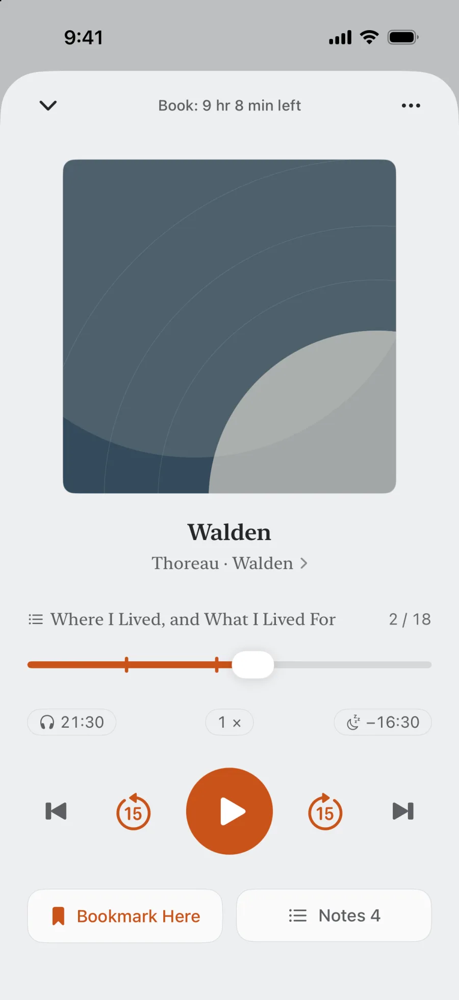
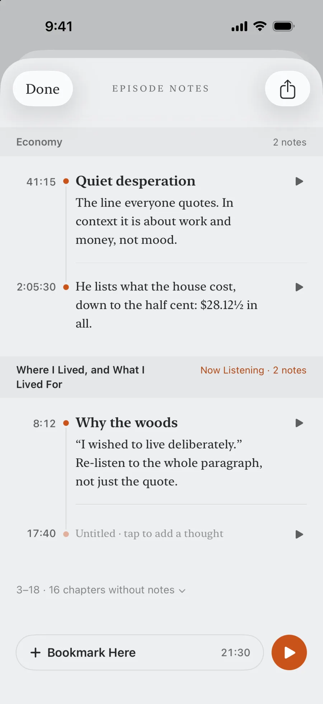

EarMemo › BookPlayer alternative with notes
Looking for a BookPlayer alternative that takes notes? An honest comparison
If BookPlayer works for you, keep it. It is free and open source, has CarPlay, an Apple Watch app and Smart Rewind, and it already lets you write a note on a bookmark and export them as a text file.
EarMemo is the alternative when the notes are the point: press your AirPods to mark the moment without taking the phone out (the mark lands two seconds early), keep listening, find each note under its chapter and on the progress bar, and export Markdown with both chapter and whole-book times. No account, no app server, no analytics. It has no CarPlay, no Watch app and no Smart Rewind, and its free version is limited; Pro is a one-time purchase.
Side by side
BookPlayer is version 6.0.1 on the App Store; EarMemo is 1.8. Both play DRM-free M4B and MP3 with chapters, keep your place per book, and have a sleep timer, speed control, Lock Screen controls and Siri. The table is what is left once that is taken out.
| BookPlayer | EarMemo | |
|---|---|---|
| Price | Free. Optional BookPlayer Pro subscription for cloud sync: US$4.99 a month or US$49.99 a year | Free with limits: 1 album at a time, 10 tracks, text on 5 notes. EarMemo Pro: one-time US$7.99 |
| A note on a bookmark | Yes: Add note after bookmarking, or by Siri | Yes: any mark can carry text, written while playback continues |
| Bookmark from headphone buttons | No: headphone Next / Previous skip forward and back | Yes, once set in Settings: Next or Previous becomes Bookmark Here, with a short chime |
| Where the mark lands | The current second | Two seconds before the press; nudge it ±2 s |
| Notes in a book with chapters | A bookmarks list per book | Grouped under each chapter, and shown as marks on the progress bar |
| Exporting notes | Plain text (.txt) with chapter and time in chapter. Free | Markdown (.md): one note, one book or a whole album, with chapter and whole-book times. Pro |
| CarPlay | Yes | No |
| Apple Watch | Yes; playback without the phone uses Cloud Sync | No |
| Smart Rewind after a pause | Yes | No |
| Sync between devices | Cloud Sync, with Pro | No. Data follows your own iCloud device backup |
| Stream from Jellyfin or Audiobookshelf | Yes | No. Plays files stored on the device |
| Wi-Fi transfer from a computer's browser | Yes | Yes |
| Account | Optional, with Sign in with Apple | None |
| Data collected | Crash and performance data (Sentry). App Store label: data not linked to you | None. App Store label: Data Not Collected |
| Open source | Yes, GPL-3.0 | No |
| Current version needs | iOS 26 | iOS 17 |
Sources: BookPlayer on the App Store, its privacy policy and its source on GitHub.
What BookPlayer already does — and some alternative lists get wrong
If you are leaving BookPlayer because you think it can't take notes, check again first. After you bookmark, BookPlayer offers Add note; its Siri action asks for one out loud; and its bookmarks list can be shared as a .txt file with each note under its chapter. Since 6.0 it also takes files from a computer's browser over Wi-Fi. None of those are reasons to switch.
The reasons to switch are narrower, and they are all about how the notes fit into listening.
Where EarMemo is different
- Marking without the phone. Set Settings → Headphone Controls → Next to Bookmark Here once, and pressing twice on AirPods Pro marks the current second with a short chime. The book keeps playing. Other headphones use whichever button sends Next or Previous; car steering-wheel buttons follow the same setting. In BookPlayer the same buttons skip.
- Marks land where the sentence started. You always react a beat late, so EarMemo sets the mark two seconds before your tap, and you can nudge it by ±2 seconds afterwards.
- Notes live inside the book. In a chaptered M4B each note sits under its chapter, and chapters without notes fold into one line. Every note is an orange mark on the progress bar; tap it and the note's title pops up above it.
- Revisit, then carry on. Tap a note to hear the passage again, close the notes and you are back where you were.
- Markdown, not a text dump. The Pro export writes headings, the time within the chapter and the time in the whole book, ready for Obsidian or any Markdown editor — see a sample export.
- Nothing to sign in to, nothing collected. No account, no app server, no analytics or crash reporter. How to check that from outside the app is on does EarMemo send my data?


Moving your books over from BookPlayer
- Find the files. BookPlayer keeps the books it has on the phone in the Files app under On My iPhone › BookPlayer.
- Import them into EarMemo. In EarMemo, use Import Folder and pick the book's folder there; a folder comes in as one album, in order. Or drag them in from a computer with Wi-Fi transfer.
- Start each book where you were. Playback positions and bookmarks stay in BookPlayer; EarMemo cannot read them. Drag to your spot once, and EarMemo keeps it from then on.
You don't have to choose one app. Both read the same DRM-free files, so plenty of people keep BookPlayer for the car and use EarMemo for the books they want to take notes on.
Other alternatives
If notes aren't the reason, EarMemo probably isn't the answer. Bound (paid) imports from Dropbox and OneDrive and has CarPlay. For more on choosing a player by the one thing you need, see playing M4B and MP3 audiobooks on iPhone; for the note-taking method itself, how to remember what you hear in audiobooks.
When EarMemo is the wrong choice
- You listen in the car with CarPlay, or on an Apple Watch. EarMemo has neither. Stay with BookPlayer.
- You want your library synced across devices or streamed from Audiobookshelf or Jellyfin. EarMemo plays files on the device only, by design.
- You want everything free, with no limits. BookPlayer's player is free. EarMemo's free version plays one album at a time and lets you write on five notes.
- You rely on Smart Rewind. EarMemo doesn't rewind automatically after a pause.
- Your books are from Audible or Apple Books. They are DRM-protected; neither app opens them.
Questions people actually ask
What is a good BookPlayer alternative for taking notes on audiobooks?
EarMemo, if notes are why you want to switch. You can mark the moment with a press on your AirPods without taking the phone out, write while the book keeps playing, see notes grouped under chapters and on the progress bar, and export them as Markdown with chapter and whole-book times (Pro). If you need CarPlay, an Apple Watch app or cloud sync, stay with BookPlayer.
Can BookPlayer add notes to bookmarks?
Yes. After creating a bookmark BookPlayer offers Add note, its Siri bookmark action asks for a note, and the bookmarks list can be shared as a .txt file that includes each note with its chapter and time.
Can I bookmark with AirPods in BookPlayer?
Not with the headphone buttons: in BookPlayer, Next and Previous on headphones skip forward and back. You can bookmark from the player screen, by Siri or Shortcuts, or from CarPlay. In EarMemo you can set Next or Previous to Bookmark Here, so a press on your AirPods marks the moment with a chime.
Can I move my library and bookmarks from BookPlayer to EarMemo?
The audio files, yes: BookPlayer stores them in the Files app under On My iPhone › BookPlayer, and EarMemo imports folders from there. Playback positions and bookmarks do not transfer; EarMemo cannot read BookPlayer's database.
Is EarMemo free like BookPlayer?
Not entirely. EarMemo is free to download, with a permanent free version that plays one album at a time, up to 10 tracks, with unlimited marks and text on five of them. EarMemo Pro is a one-time US$7.99 purchase in the US, with no subscription. BookPlayer's player is free; its Pro subscription adds cloud sync.
Does EarMemo have CarPlay or an Apple Watch app?
No, neither. If you listen mostly in the car or from your watch, BookPlayer is the better choice.
Which is more private, BookPlayer or EarMemo?
EarMemo collects nothing: no account, no app server, no analytics, no crash reporter, and its App Store label is Data Not Collected. BookPlayer collects crash and performance data through Sentry for everyone, and if you sign in and subscribe to Pro it stores your library, progress and bookmarks on its servers for sync, as its privacy policy says.
Try it with your own files
EarMemo is free to download and free to keep using within its quota. EarMemo Pro is a single one-time purchase — no subscription, no ads, no account.